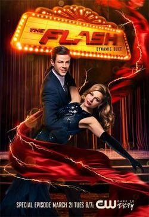
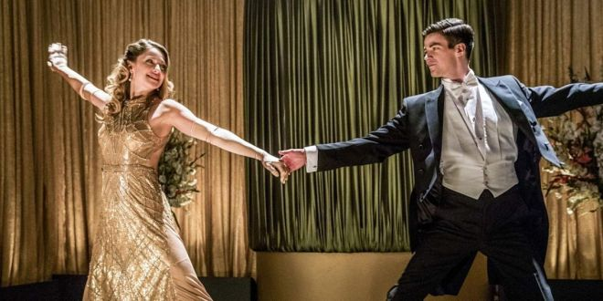
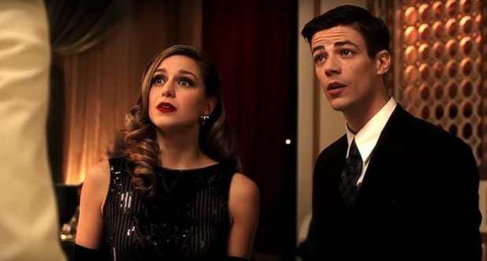
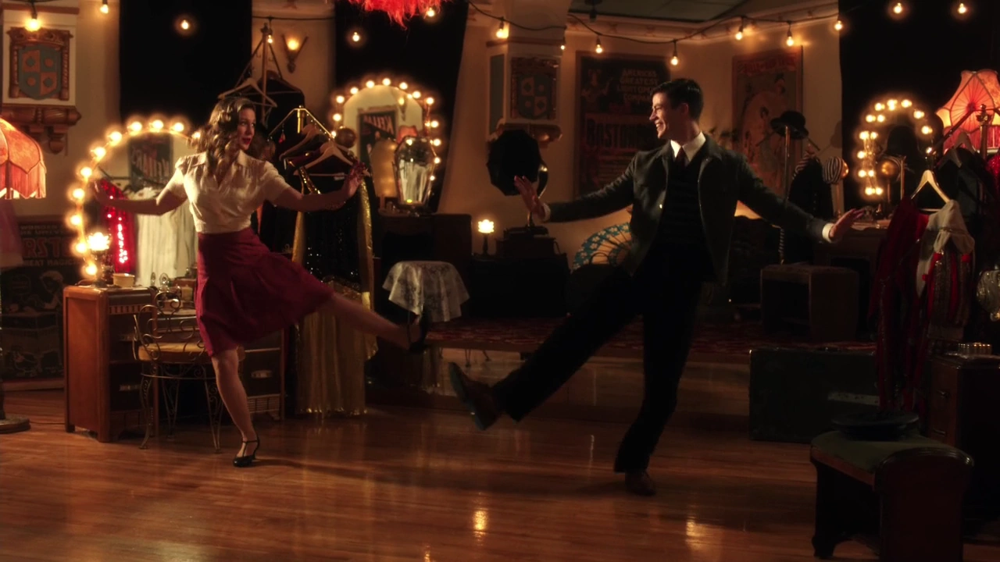
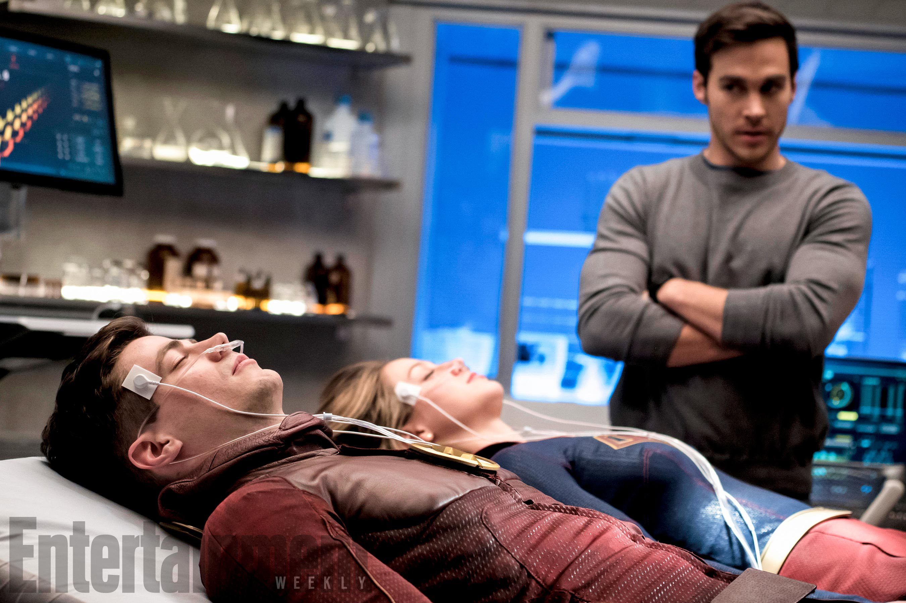

"Duet" is the seventeenth episode of the third season of The Flash, and the sixty-third episode overall. It aired on March 21, 2017. It is the main part of the musical crossover between The Flash and Supergirl. The story begins at the end of the Supergirl episode "Star-Crossed", which aired on March 20, 2017, which saw Kara Danvers / Supergirl hypnotized into a coma by Music Meister, with Mon-El and J'onn J'onzz / Martian Manhunter bringing her to Earth-1 in hope that Team Flash can save her.
| Serie | Episode No. | Episode Title | Original Air Date | |
|---|---|---|---|---|
| Part 1 | Supergirl | Season 2Epsiode 16(At the end of the chapter) | Star-Crossed | March 20, 2017 |
| Part 2 | The Flash | Season 3Epsiode 17 | "Duet" | March 21, 2017 |

Barry and the team are surprised when Mon-El and J'onn J'onzz arrive on their Earth carrying a comatose Supergirl who was whammied by the Music Meister. Unable to wake her up, they turn to Team Flash to save her. However, the Music Meister surprises The Flash and puts him in a similar coma, one that Team Flash can't cure. Kara and Barry wake up without their powers in an alternate reality where life is like a musical and the only way to escape is by following the script, complete with singing and dancing, to the end.
 
Barry watches the musical "Singing in the Rain", while reminiscing about watching it with his mother. Cisco is worried, as Barry hasn't really moved from the couch ever since his broken engagement with Iris. H.R. calls them, and they head to S.T.A.R. Labs. A breach has opened, and Mon-El and J'onn J'onzz from Earth-38 arrive with comatose Supergirl. Mon-El and J'onn explain, what happened to her, but they have no idea what is really going on. J'onn also mentions Music Meister came here to find Barry, since he intended to catch the fastest man alive. Cisco starts tracking the Music Meister, who did this to Kara, only to find he is in the speed lab. Barry goes to fight him, and H.R. encourages Wally to go as well. Music Meister mocks Wally, and knocks him out easily, as he is still shaken about his experience in the Speed Force. Barry attempts to attack the Meister, but he beats Barry to the ground, and hypnotizes him the same way he did with Kara. Barry finds himself in a 1940's nightclub and sees Kara singing "Moon River" on the stage, and is amazed how well Kara can sing. Kara manages to notice Barry, and after the song, the two meet in order to find out, what is going on. They encounter to the club owner, who looks exactly like Malcolm Merlyn (with Kara not knowing who he is), but he claims his name is Cutter Moran. and he threatens them to sing something original. Next, they encounter who appears to be Winn Schott, but his name is Grady. And finally they encounter a guy, who is like Cisco. Then Music Meister appears, and explains them, that it wasn't really him, who put them inside this illusion. He just triggered it, and mentions it turned out to be a musical, as both Barry and Kara love musicals (though it could've been anything). Music Meister says, that in order to get out, they need to follow the script to the end. He starts with the three men perform "Put a Little Love in Your Heart". After the song, he mentions that if they die here, they die also in the real world. With not much of a choice, Barry and Kara agree to do, what Music Meister said. Then, they are both knocked out by gangsters led by who seems to be Martin Stein. In the S.T.A.R. Labs, Caitlin finds, that Barry is losing his Speed Force, while Kara is losing the solar radiation inside her, and concludes Music Meister is stealing their powers. Cisco tracks him breaking into a bank with Kara's heat vision, and Wally and Cisco decide to go get him. J'onn offers to come too. Cisco disagrees, until J'onn reveals his Martian Manhunter form, and stuns everyone. The three go after Music Meister, and he has indeed Barry's speed. Wally gives chase, but as soon as he catches him, he uses Kara's flying power to escape. Cisco tells J'onn to jump into breach, in order to hit him. He does so, and Wally uses supersonic punch to knock him out cold. Inside the illusion, Kara and Barry are kept prisoners by Digsy Foss, who looks like Joe. He asks the heroes to find his daughter, Millie, who looks like Iris. They agree, and Cisco's look alike leads them to where she is. Kara reminds Barry, that even if she looks like Iris, it's not her. She also mentions she is glad she hasn't seen anyone, who looks like Mon-El. When they hear screams, they break down the door, and Kara is shocked, that Millie is making out with Tommy Moran, who looks exactly like Mon-El. The two lovers explain, that they are truly in love, but it is forbidden as they are the children of two rival gangster leaders. Barry says, that they should hold on to the love they have, and encourage them to tell it to their fathers. Barry takes Millie to Digsy, and Kara takes Tommy to Cutter. Both fathers are initially hostile towards it, until Barry and Kara explain the truth of their love. At the same time, both heroes come to understand their mutual feelings towards Iris and Mon-El. Fathers start to sing "More I Cannot Wish You", seemingly accepting their children's love. But as soon as Barry, Kara, Millie and Tommy leave, both fathers declare war on one another. At S.T.A.R. Labs, Iris and Mon-El go to see imprisoned Music Meister, and demand he brings Barry and Kara back. He claims he can't as his powers don't work that way. They need to finish the script, but then he mentions, that love is the real key of getting them back. If Iris truly loves Barry and Mon-El loves Kara, they can get them back. In the illusion, Barry and Kara feel relieved, that they succeeded, until Grady comes to tell them that it's rehearsal time. Realizing they need to finish the musical, Kara asks, does Grady have something original. He starts to play piano, and Barry and Kara make up a song "Superfriend" (the lyrics are about the Flash and Supergirl and their lives). Their live performance receives standing ovation. Suddenly, they hear gunfire outside, as the two rival families have started fighting. Barry attempts to diffuse the fight, but without his powers, he is shot. Kara is shot as well, and the hits cause their physical bodies to go into convulsions.Caitlin can't do anything for them, but then Iris and Mon-El remember, what Music Meister said: their love can bring them back. Iris urges Cisco to vibe them inside the illusion. It works, and they arrive to see their loved ones dying. Barry and Iris confess their love to each other, and Mon-El apologizes to Kara how he lied to her, and Kara forgives him. They kiss, and all four are returned to the real world. Everyone are happy, and Music Meister enters with applause. He tells Cisco that the particle accelerator prison never really held him. Barry and Kara are baffled, why he did this to them, and he tells them he wanted to teach them a lesson in love, as both Barry and Kara were two persons with broken hearts. The lesson was to make them realize that despite the lies and other problems they have with the ones they love, they can be overcome. He then disappears. Kara, Mon-El and J'onn are preparing to leave, and both heroes are amazed, what good singers they are. Kara also warns Mon-El, that if he ever lies to her again, she will drop a mountain on him. Barry and Iris return home, and the place is still the same. Barry starts to sing "Runnin' Home to You" to Iris, and at the end proposes to her again, this time with the right reasons.
 